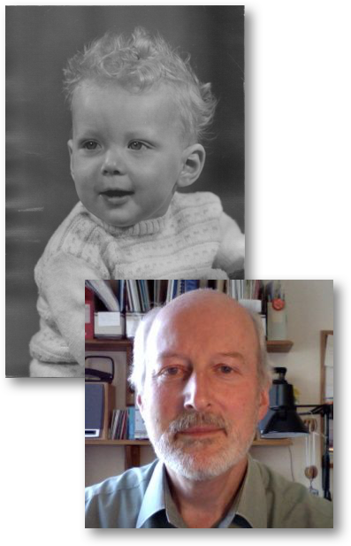

The title is not really correct. After all, everyone is an individual and so anything but ordinary. In fact it is truer to say that everyone is extra-ordinary. However, when I look back at my life there was no knighthood or Nobel Prize, not even an MBE. Perhaps my expectations are too high. It should be said that we've lived comfortably, we have two well-adjusted children (I think) and three grandchildren (with no responsibility for their upbringing) and we have retired with just enough income to keep us in a reasonable degree of comfort.
So why would anyone want to read anecdotes about my life, the life of quite an ordinary person who's life spanned the twentieth and twenty first centuries? Probably no one, but writing them provides me with an opportunity to stretch my memory (and my filing system) and search for some consistent threads. It might also provide the next and subsequent generations with a small insight into my life. I've found that trying to put together details of my parent's lives was very difficult, even when one of them was still alive, and my knowledge of my grandparents, even though I knew them all, is very sketchy. But how do you organise a description of your life? Should it be a chronological account or a series of dips into my life in some order that relates similar events? Perhaps we should just see how it evolves. It could be similar to a flat stone being skimmed across the surface of the water, dipping in now and again.
My memory may be poor and my filing system may have evolved rather than being designed, but I have a number of sources of information about my life and that of those around me. Paper records are a little thin on the ground, particularly after being encouraged by Angela to clear out old files before we suddenly found that we were moving into a smaller house. However, during that process I 'found' a collection of pocket diaries dating from 1972, albeit with some years missing, that provided somewhat cryptic accounts of events. For example, one day would contain simply a car registration number, the implication being that we took ownership of the car on that day. That information, combined with a separate (incomplete) list of cars that we have owned, put our various vehicles into the timeline of our lives. They also evoked memories such as our changing a Mini Clubman Estate for an Austin Maxi at the time when Victoria was a baby and was being transported in a carry cot that was simply perched on the back seat. Front seat passengers had seat belts (I can't remember if it was compulsory to wear them at that time), but there were no regulations for those travelling in the back.
We also have quite a number of photographs (many still in there envelopes and stored in chronological order). Luckily I was in the habit of writing on the back of each photo with some slight description and the date on which it was taken. Other sources of information are electronic in form. We have many more photos stored in a variety of 'locations'. These usually have information stored with each shot that says when it was taken and most are filed within directories that give some indication of where they were taken. A few actually have more information added by me, but very few.
Since 2010 I've tried to record notable events in our lives on web pages. These are not in the form of a diary or journal, but they do provide some details of what we were doing and put some of the photos into context. When I retired on the 1st July 2013 I have been trying to keep a journal. Not one in which I record my deeper thoughts (I don't think I have any), but simply a record of what we've been doing day by day. Retirement offers the opportunity to have a much more varied life, so at least keeping a note of the things on which we spend out time is useful for the forgetful.
Consequently, what follows is drawn from memory and from this collection of information sources. The advantage of using this format (html) to record these words is that I'm not limited to just words. Where the narrative is helped by adding a photo (or video or diagram or map) then I can do so. I can even point the reader to some other location on the web where thay can find supporting or related information. It could take a while! But early 2019, after five and a half years of retirement, seems as good a time as any to start.
Reminiscences? Perhaps ramblings!